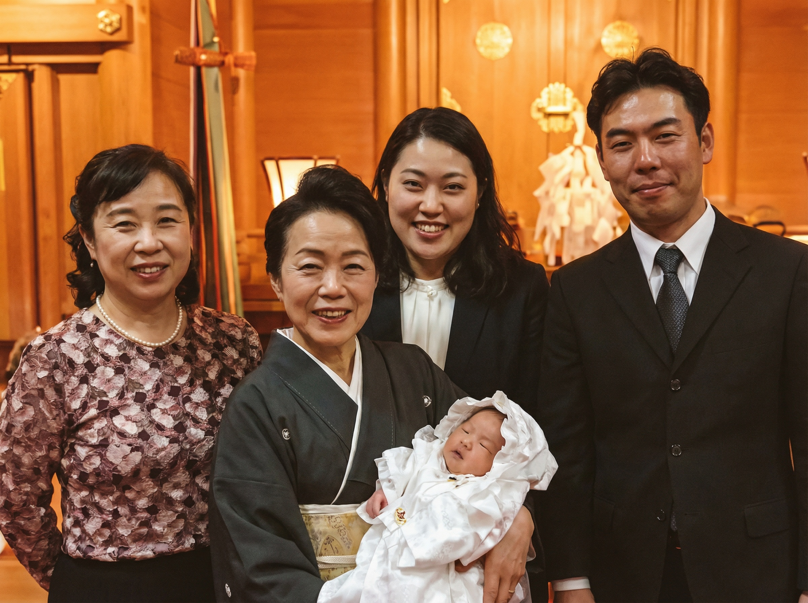
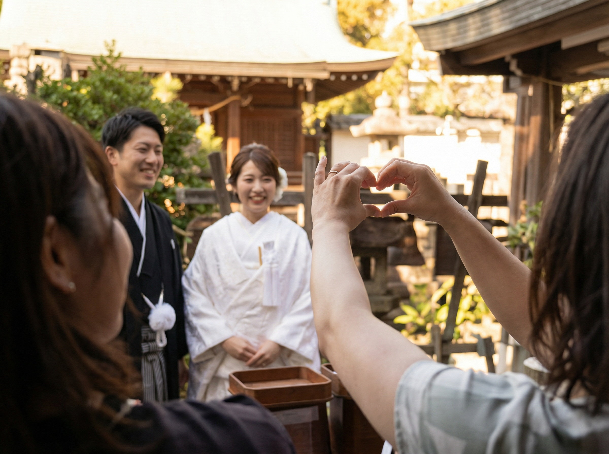
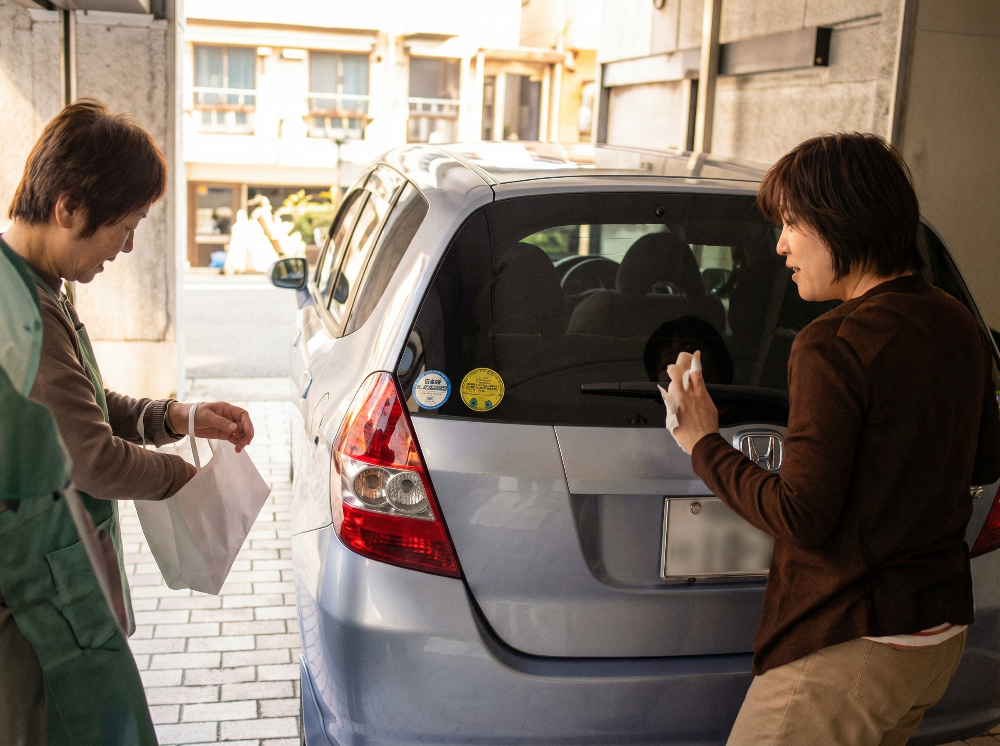
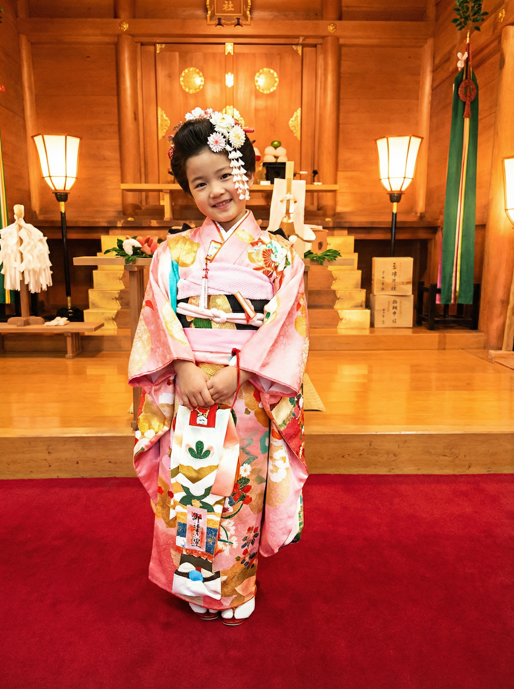
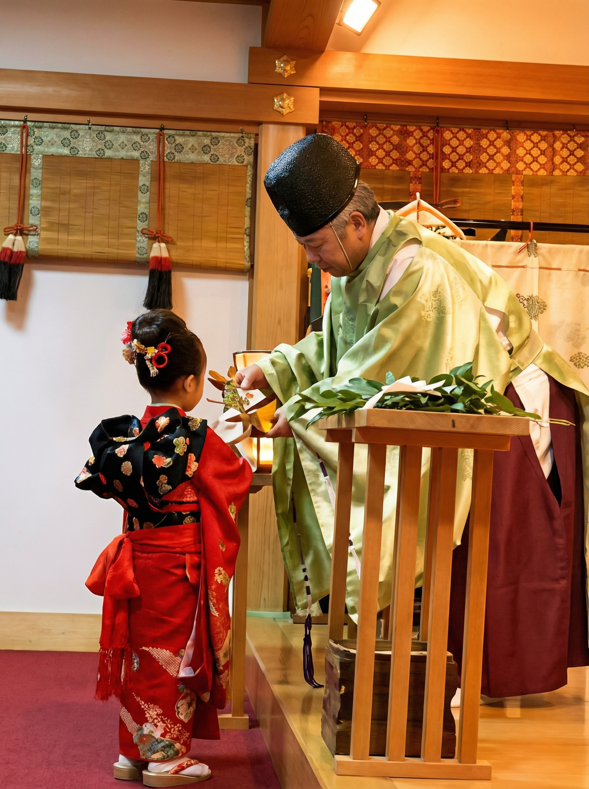

御祈願

ご祈祷は、午前10時より午後３時まで、１時間毎に随時行っております。ご希望の時間の15分前には社務所へお越しいただき、受付をなさって下さい。
但し、祭典などの都合により受けられない場合もございます。
前もってお電話にてご希望の日時をご確認の上お越しいただければと存じます。
なお時間毎に行っておりますので、個別の予約は受け付けておりません。
ご了承下さい。
ご祈祷初穂料
| 個 人 | 一願意 | 8,000円・15,000円・30,000円以上 |
| （初宮・七五三は 10,000円以上） | ||
| （出雲屋敷祈願は 30,000円以上） | ||
| 団体・法人 | 一願意 | 20,000円以上 |

詳しくはお電話にてお問い合わせ下さい。
電話 03-3401-9301（午前９時より午後５時まで）
主な御祈願
家内安全
家族仲良く平穏で幸せな暮らしは多くの方々の願いです。出雲の大神様の幸せの縁に結ばれる御神徳をたくさんいただかれまして、『これからも幸せな生活を一家で楽しめますように』と一年間の家庭の平穏無事・家運の繁栄・子孫の繁栄を御祈念致します。年頭には、家族みんなが平穏無事で、病気にならないよう、家運繁栄と開運の家内安全の御祈願を受けましょう。
商売繁盛

大国主大神の御神徳は広大でありまして、農工商などの殖産興業に関するものは、人々の生活が安泰で幸福でありますよう、神代の昔、大神様の創められたものであります。今日、福の神と言えば出雲の大神様のことですが、この御事跡に因むものでありましょう。当社では、皆様方が大神様の御神徳を受けられて、事業、商業がますます御繁栄なさいますよう、お祈り致しております。
写真はマスの中にマスが入っており、中にダイコク様の像が納められている「益々繁盛木像」です。
縁 結
古来より、出雲大社の大国主大神は男女を結ぶ縁結びの神として多くの方々の御崇敬をいただいております。神代の昔、夫婦の縁結びの範を示されただけでなく、旧暦の１０月には全国の八百万の神々が、出雲大社に参集され大神様の御許で諸々の縁結びの御神議をされております。この故事により縁結びの神と称されているのです。
ここでいう縁とはただ男女の縁という狭いものではなくあらゆるものとの繋がり、人倫の続き合いを意味致しますが、男女の縁はその幸せに結ばれる縁の始まりであることも確かであります。その縁は神様のみ知っておられるものです。
御祈念により男女の縁・友人関係・夫婦家庭円満等の御利益をいただくことが出来、良き縁を結ばれたとのお言葉もたくさんいただいております。縁結びの神、出雲の大神様の幸せの御縁をいただかれますよう、謹んで御祈願申し上げます。
交通安全
年間１万人以上の方が交通事故で尊い命をおとされています。お車を購入されたら、安全運転でハンドルを握りたいものです。新車でも中古車でも、大難が小難に、小難が無難になるよう自動車のお祓いを受けましょう。
自動車を購入したときだけでなく、大神様の御守護とお祓いを受けた清浄無垢のお気持ちを新たにして運転していただくために、出来れば毎年御祈願されるのが望ましいのです。交通事故のないよう、無事を御祈念致します。御祈念の際は、お車の車種、ナンバーを御記入いただきます。
初宮参り

初宮参りは生まれた子に初めて神詣りをさせることで、これは鎌倉時代頃からおこなわれています。一般に赤ちゃんが男子なら生後３１日目、女子は３３日目にお宮参りをするとされていますが、時代や地方により、その日は一定しておらず、今ではあまりこだわる必要はありません。お子様の体調や天候などを考えて、ご都合のよい日にお参りください。
子供は神の尊い恵みにより授かった神の子です。神の恵みに感謝し、子供が健やかに無事成長することをお祈りしましょう。
七五三
古来、子供の成長の最も大切な時機に儀式を行い、鎮守の社にお参りする風習がありました。
三歳児は「髪置（かみおき）」といって、子供の頭に白髪をのせる儀式を行いました。
その子が白髪になるまで丈夫であって欲しいとの親心です。五歳男児は「袴着（はかまぎ）」といって、子供を吉方を向けて立たせ、袴を付ける風習がありました。七歳女児には「帯解（おびとき）」といって 初めて帯を締めさせる儀式があり、これは女の子が早く成長して良縁があるようにとの風習であります。これにちなんで、子供の成長を祝福し、数え年で三歳の男女児、五歳の男児、七歳の女児が１１月１５日、着飾って神社に参詣することが広く行われています。今では１５日にこだわらず、
１１月中の吉日を選んでお参りすることが一般的です。この古風を伝承していることは世界にも類例のない美風といえましょう。
七五三の歳は幼児発育上の区切りと転機にあたります。この成長の段階ごとにその子の将来を祝い、健やかな発育を大神様に祈ることは、子を思う親心の至情でありますし、子供の情操にもよいものとなるでしょう。七五三は家族そろって神社にお参りし、お子様の元気な成長を感謝、祝福し、今後も健やかに成長するように神前にて祈念しましょう。
厄 除
厄年とは「数え年」を基に、身体に変調をきたし易い年齢を厄年と定めており、古来より災難が多く、行いを慎む年といわれてきました。現在も一生のうちの転機にあたる年まわりとして信じられていて、障りのある行動や振る舞いは慎む年であるとされています。
その年齢については、様々な説がありますが、一般に男性の２５歳、４２歳、女性の１９歳、３３歳が厄年とされています。なかでも男性の４２歳、女性の３３歳は、特に変調をきたしやすく、大厄と呼ばれ、前後三年を前厄、本厄、後厄として忌み、その三年間が大厄の要注意の年にあたります。
厄年にあたる人は年頭から立春の前後くらいの間に、一年間が無病息災で乗り切れるよう神社に詣でて厄除祈願をしてもらい、慎みの生活を送ることでその年の平穏と安らかな生活を願いましょう。
当社では、ダイコクさまの神威を仰いで、厄年の方の厄を祓い、その年が平穏無事に過ごせるようにお祈り致しております。
※数え年...生まれた時を一歳と数え、以後正月を迎えるごとに年齢を加える日本古来の年齢の数え方。
出雲屋敷地鎮祭
住宅や宅地が凶相のため病人が続出したとか、家業が発展しないとかいうことがよくいわれます。移転、普請などの場合は方位家相を調べてもらうこともよいでしょう。そうした時に吉相の方角に思い通りの建物を建てることができないことが往々にしてあります。このような時に大地の司神であります大国主大神の御神徳をいただいて御守護を願う信仰が「出雲屋敷」なのです。
大国主大神は別名、大地主神と申し上げ、大地を司る神様であって、全ての土地を守護される尊い御神徳があります。即ち、その土地に属する方位方角についての一切の傷害を除去される働きを持っておられるのです。
皆様の屋敷を大神様のお屋敷に祀り替えることによって、何の方位の凶相もなくなり、信仰により全てが吉相になるのです。土木建築をする際は、必ず土地に関する最高神である大国主大神の神慮を仰ぎ、土地の平安堅固であることをお祈りすべきでしょう。この出雲屋敷の御祈願のお取り次ぎをいただいて建築に着手すれば、必ず大神様の御加護をうけて、俗にいう金神・鬼門・塞・歳破・的殺などの方位の祟り障りもなくなり、事業もうるわしく無難に成就し、家々はいよいよ繁栄するようになりましょう。古来、出雲屋敷についての霊験は数多く語り伝えられております。なお、出雲屋敷にされた方は、毎年、この神恩の感謝の気持ちに多少の初穂を奉納する「屋敷年貢」によって、長い年月かけての大神様の御加護を得て、安楽に末永く住まうことができるのです。
その他御祈願

旅行安全、海上安全、心願成就、五穀豊穣、進学成就、心身健全、病気平癒、様々なご祈願がございます。電話にてお問い合わせください。
郵送での御祈願
当分祠では、ご遠方の方や諸事情により御参拝に来られない方のために、郵送での御祈願をお取次ぎしております。
ご希望の方は、郵便振替又は郵便書留にて御初穂料を添えて、祈願内容、郵便番号、住所、氏名、生年月日、電話番号を明記しててお申込み下さい。
ご入金を確認の上、ご祈願を斎行し、御札をお送りいたします。
郵送祈願の御初穂料は、八千円以上です。
良縁・家内安全・商売繁盛・厄除・交通安全・安産・合格・病気平癒等、その他諸祈願をたまわります。御祈願の頁もご参照下さい。
◆ 郵便振替
郵便振替は入金確認までに一週間ほどかかります
| 口座番号 | 00120-0-37454 |
|---|---|
| 加入者名 | 出雲大社東京分祠 出雲大社教東京出張所 |
| 通信欄 | 祈願内容(願意)・郵便番号・住所・氏名・年齢・電話番号をご記入下さい。 |
◆ 郵便書留
祈願内容(願意)・郵便番号・住所・氏名・年齢・電話番号をご記入になり、御初穂料を同封の上、お申込み下さい。
宛先：〒106-0032
港区六本木7-18-5
出雲大社東京分祠 宛
皆様方が、御親大神様の幸せのご縁を頂かれまして、願いが成就されますよう、お祈り申し上げます。社頭での参拝祈願をご希望の方は、「御祈願」の頁をご参照頂き、お電話でお問い合せ下さい。
御祈願された方には、御祈願の内容に応じた御神符をお送り致します。